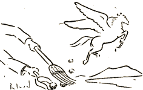

Ho sankta Muz', mistermaskita io,
Legendfigur' por pia fantazio,
Ne kredas mi, ke ie vi ekzistas (*),
Sed al la tent' mi tamen ne rezistas
Alvoki vin laŭ famaj pramodeloj. ―
Kun aŭreol' de mistifik-mistiko
Alflugu do, estrino de l' pedeloj,
Por levi nun kurtenon de l' Butiko!
„Hi hi! Ha ha! ― Vi tro facile mokas,
Sed vane min oni neniam vokas.
Mi venis, jen! ― ho ne por vin inspiri,
Mallonge nur al vi mi volas diri,
Ke via rim-malkara poezio
Ne estas art' kreita dum ekstazo,
Ĉar via task' konsistis nur el tio:
Kolekti la ... sterkpomojn de Pegazo!
Kaj ― inter ni ― ĉu iam simpla floro
Aŭ birdokant' vin tuŝis en la koro?
La noktospir' sub la ĉielkupolo
Ne ĉarmas vin; ― vin logas nur petolo,
Banala ŝerc' kaj dubesana sprito.
Kaj tion ĉi ... indulgas la kritiko!
Disiĝu ni kaj restu, laŭ merito,
Mi sur Parnas', vi ... en spicistbutiko!“
Severa Muz', ― vi ŝutis malavare
Benvortojn sur hometon; kiu ŝpare
Misuzis vin ĝis nun sub sia plumo,
(Estonte li vin lasos en mallumo.)
Sed tamen mi kun tre respektaj sentoj
Koncedas, ke ... ekzistas kaŭz' por miri,
Kaj por edif' de miaj geklientoj
Necesis tion diri.
(*) Ke Muzoj nuntage ne plu ekzistas, plej bone pruvas la fakto, ke oni renkontas la lastajn ekzemplerojn nur en... Muzejoj.